The problem
Simulated humans don't act like real ones
Existing methods are fast or optimal, not both
The fix
How do people intervene?
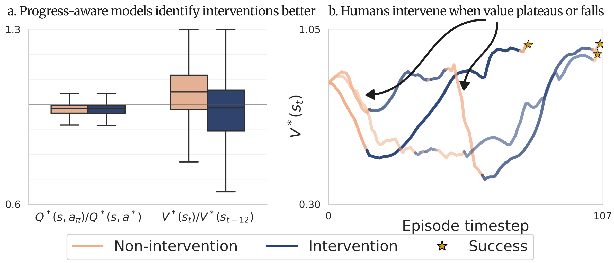
Takeovers follow plateaus or drops in value, not single bad actions.
DesignSo Q-OIL keeps the bonus from leaking back to the states before a takeover.
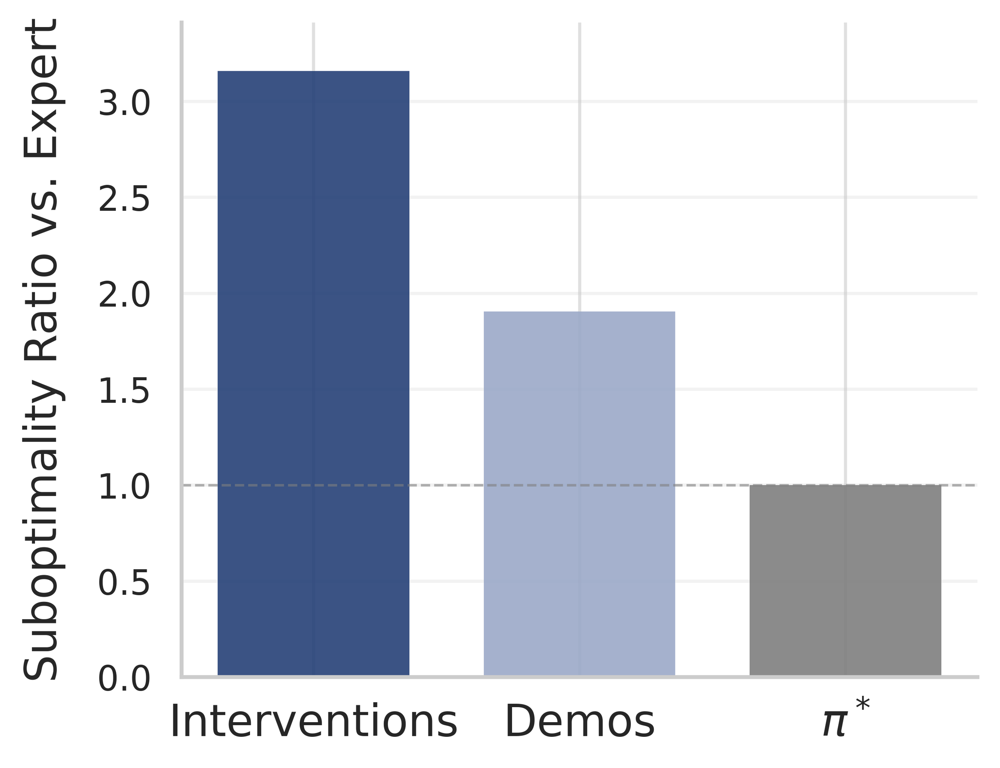
Takeover actions are about 3× more suboptimal than an expert policy.
DesignSo Q-OIL rewards corrections instead of copying them.
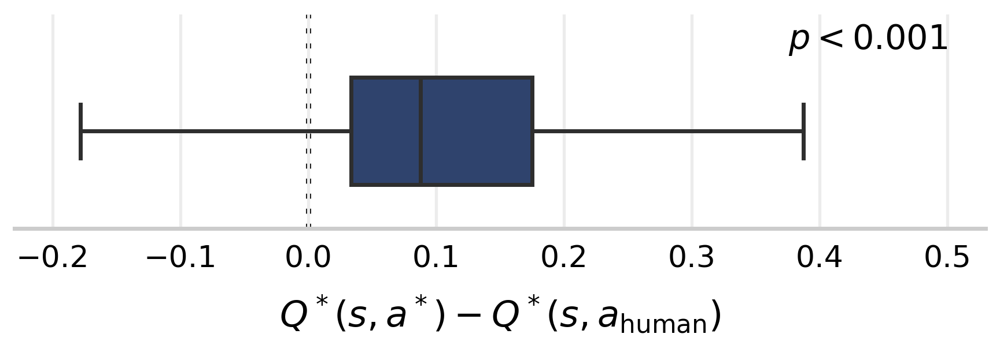
The trained robot picks different, better actions than the person did.
DesignSo corrections only guide exploration, and their influence fades as takeovers become rare.
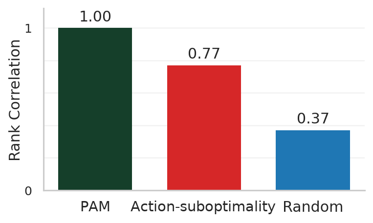
PAM, our progress-aware intervention model, matches real users' ranking exactly. Its coefficients k, δ, α, β are learned from real intervention data.
P(intervene) = α if V*(st) − V*(st−k) < δ, else β
BenchmarkSo we compare every method with PAM in simulation.
Reward corrections, don't copy them
- for each step:
- act: the person if they take over, else the robot
- store (s, a, r, s')
- update Q toward r + γ Q(s', a')
- update the policy to maximize Q
A takeover is just one more transition.
- for each step:
- act: the person if they take over, else the robot
- store (s, a, r, s'), plus a bonus b if it was a takeover2
- update Qtask toward r + γ Qtask(s', a')
- update Qopt toward r + b + γ Qtask(s', a')1
- update the policy to maximize Qopt, plus BC on takeovers3
Takeovers are rewarded, and the bonus never leaks backward.
How does Q-OIL work?
Each takeover earns a small bonus, which raises the value of the path the person showed, so the robot explores there instead of copying the exact actions. A second, task-only critic provides the bootstrap targets, so the bonus cannot leak back to the states where the robot was failing. As the robot needs help less often, bonus steps become rare and Q-OIL settles on the policy that is best for the task.
How does it compare to other methods?
Results
- 10–50%higher success on real Franka tasks
- ~30%less human effort
- ~90%higher throughput
Simulation, with PAM
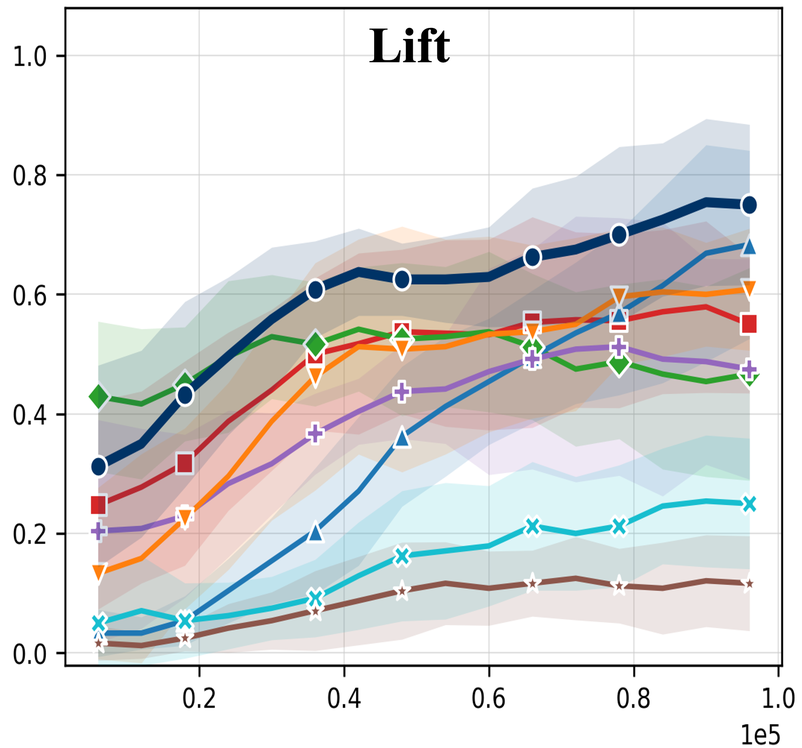
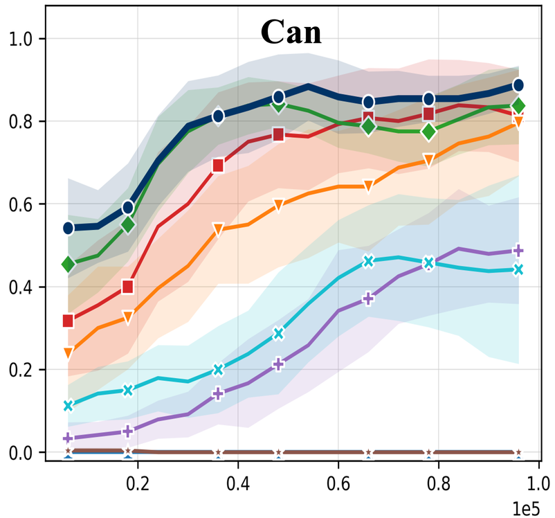
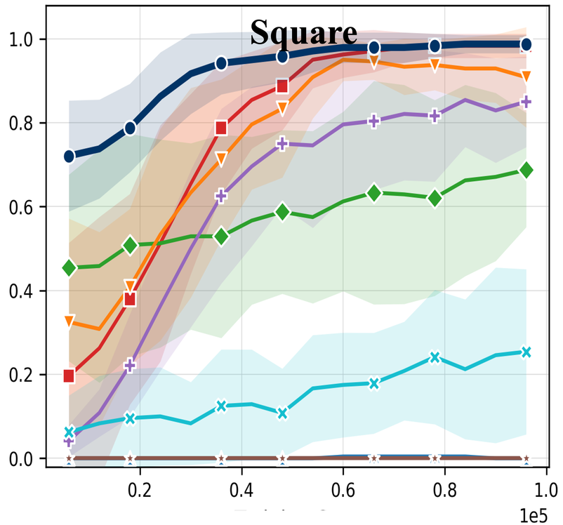
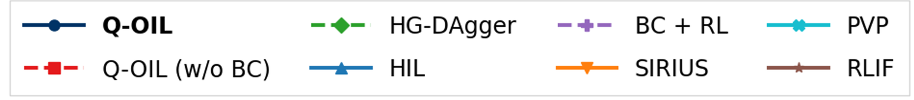
Real people, simulated robots
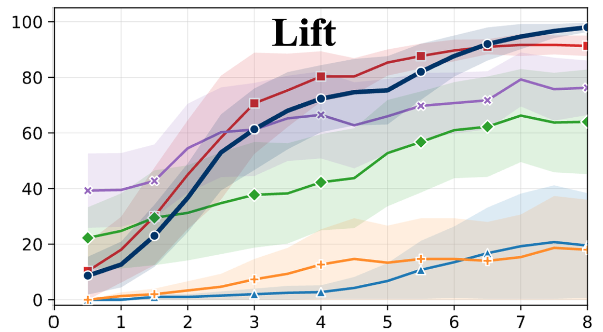
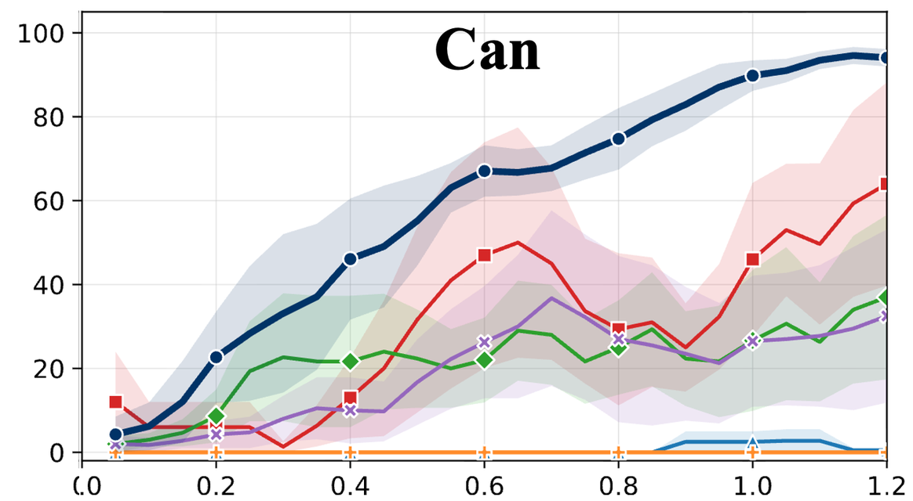
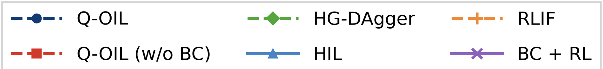
Real robots: Franka
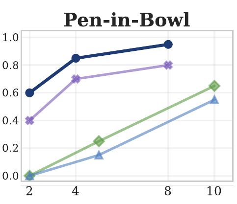
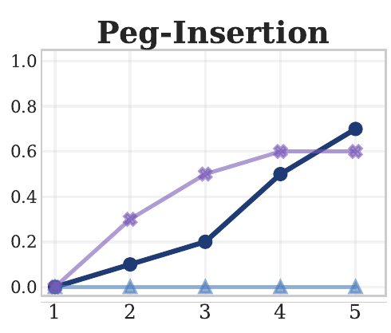
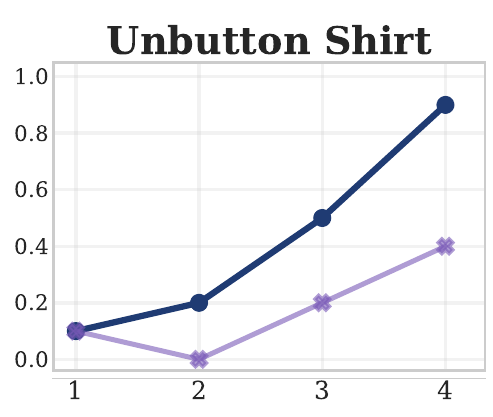
Pretrained VLAs, bimanual robot
Ablation: why two critics?
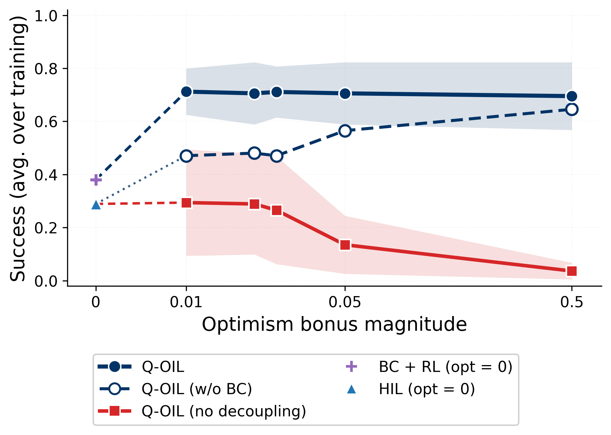
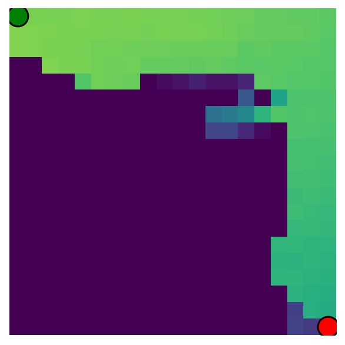
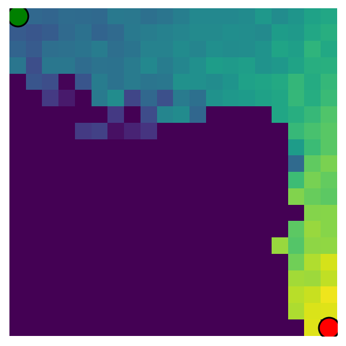
Learned value on a grid world after 50k steps, from the start (top left) to the goal (bottom right).
Q-OIL is stable across a 50× range of bonus values. With one critic, the bonus leaks backward: value piles up near the start instead of the goal, and performance collapses as the bonus grows.
BibTeX
@inproceedings{qoil2026,
title = {Q-OIL: Optimistic Exploration in Learning from Human Interventions},
author = {Teegavarapu, Pranav and Poddar, Sriyash and Qi, Rico and
Winston, Cleah and Khandelwal, Krisha and Onol, Aykut and
Jaques, Natasha and Gupta, Abhishek},
booktitle = {Conference on Robot Learning (CoRL)},
year = {2026},
}